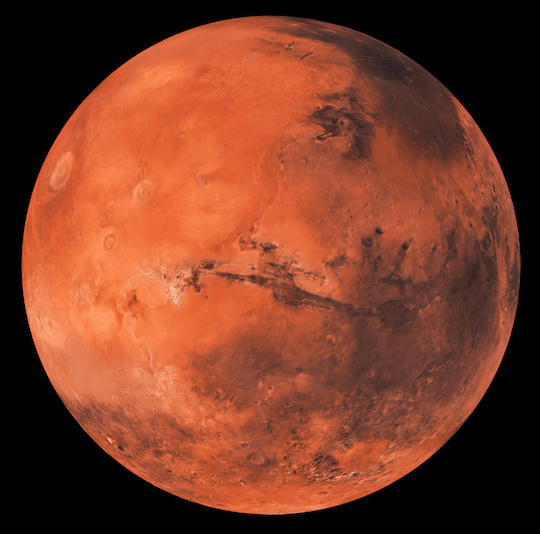
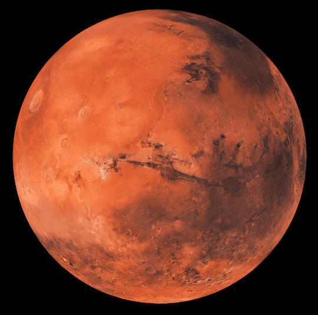

Planet Profiles
 

|
Venus |
Mars |
Jupiter |
Uranus |
| Mass (kg) |
4.87 x 1024 |
6.42 x 1023 |
1.90 x 1027 |
8.68 x 1025 |
| Diameter (km) |
12104 |
6787 |
142800 |
51118 |
| Mean Density (kg/m3) |
5250 |
3940 |
1314 |
1290 |
| Escape Velocity (m/s) |
10400 |
5000 |
59500 |
21300 |
| Average Distance from Sun |
0.723 AU (108,208,930 km) |
1.524 AU (227,936,640 km) |
5.203 AU (778,412,020 km) |
19.19 AU (2,870,972,200 km) |
| Rotation Period (Earth days) |
243.02 (retrograde) |
1.026 |
0.41 (9.8 Earth hours) |
0.72 (17.9 Earth hours)(retrograde) |
| Revolution Period (Earth days) |
224.7 |
686.98 |
11.86 |
30,685 (84 Earth years) |